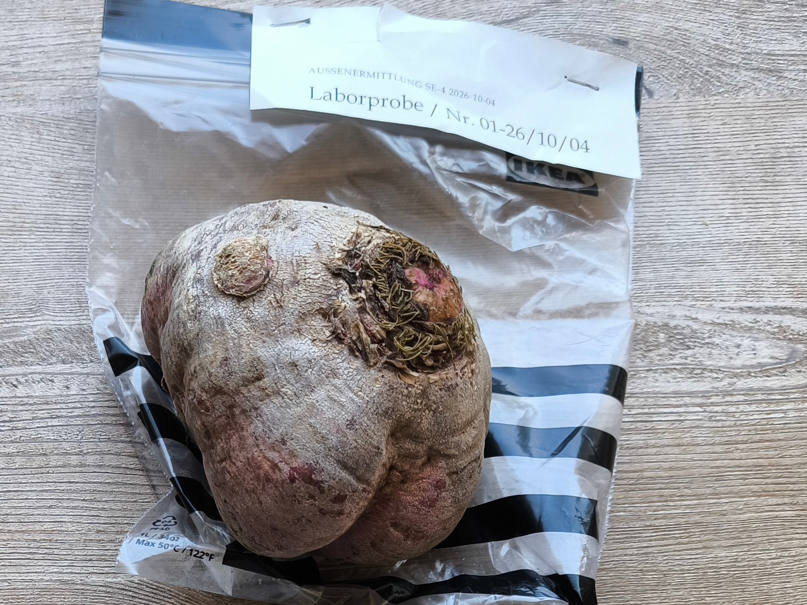
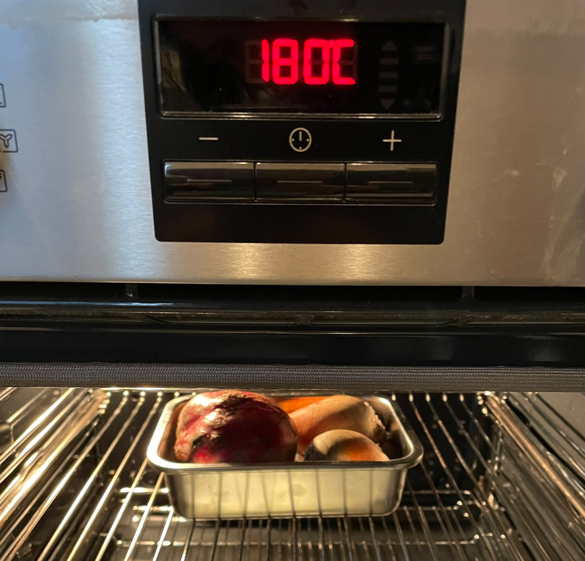
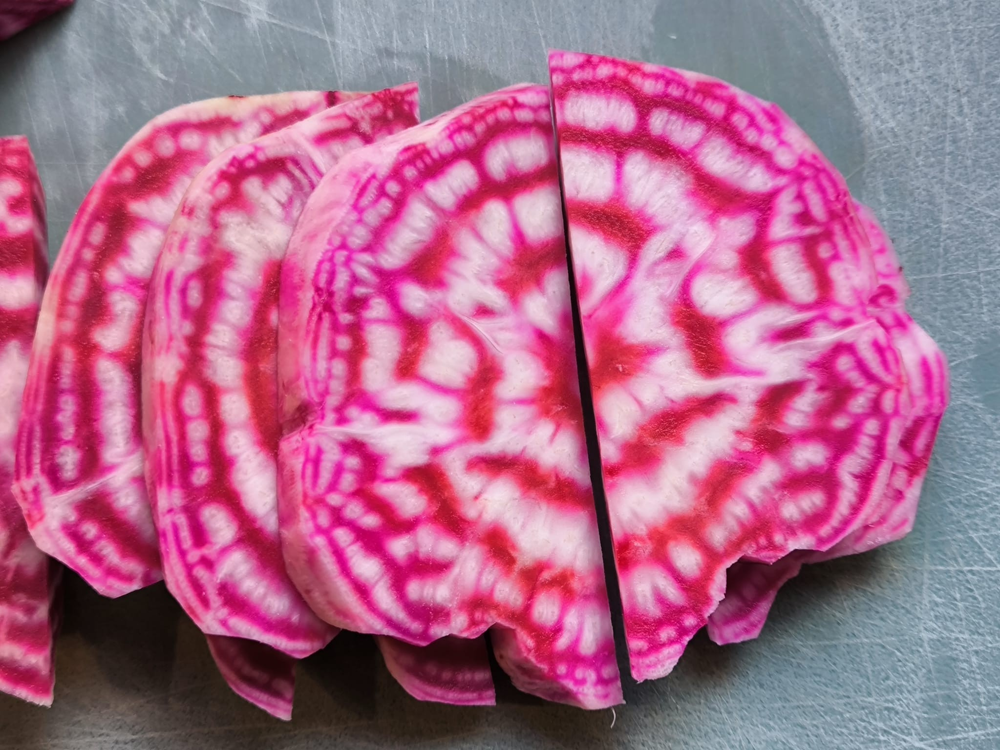

Identität ohne Zweifel?
Laborbericht Nr. 01 · Forensische Probenuntersuchung
Stammdaten
Untersuchungsauftrag
DNA-Sequenzierung, Kontrolle auf Manipulation und Abgleich mit Referenzdatenbanken.
Probenbeschreibung und Vorbereitung



Methodik
Messer, Ofen, Pfanne; Untersuchung unter Normalbedingungen; DNA-Sequenzierung gemäß Verfahren AD-UDo_2015.
Messergebnisse
| DNA-Konzentration | 38,6 ng/µl |
|---|---|
| Reinheit A260/A280 | 1,84 |
| Sequenzabdeckung | 98,7 % |
| Referenzübereinstimmung | 99,7 % |
| Taxonomische Zuordnung | Beta vulgaris |
Auswertung und Interpretation
Die untersuchte Probe konnte mit hoher Wahrscheinlichkeit der Art Beta vulgaris zugeordnet werden. Hinweise auf eine ungewöhnliche Sequenzabweichung wurden im untersuchten Markerbereich nicht festgestellt. Eine umfassende Aussage über sämtliche denkbaren genetischen Manipulationen ist daraus nicht ableitbar.
Kriminalistischer Abgleich
Gesamtbewertung
| Taxonomische Zuordnung | Beta vulgaris |
|---|---|
| Spezifizierung | Chioggia-Bete |
| Konfidenz | 99,7 % |
| Referenzdatenbank | REF-BV-04 |
| Auffälligkeiten | Keine relevanten Sequenzabweichungen |
Aktenvermerk des Zentrallabors
Automatischer Abgleich mit P-6180466
In P02 ist ein agrarwissenschaftliches Studium des Chef-Inspektor D dokumentiert. Die Einsendung einer offenbar botanisch identifizierbaren Kulturpflanze ohne entsprechende Vorabzuordnung wirft daher Fragen hinsichtlich der praktischen Anwendung der Fachkenntnisse auf.
Dies lässt vermuten, dass eine berufliche Spezialisierung im Bereich Wurzelgemüse nicht stattgefunden hat. Alternativ ist eine vorübergehende Beeinträchtigung der Zuordnungsfähigkeit durch den Konsum fermentierter Getränke in Betracht zu ziehen.
Empfehlung
Bei künftigen botanischen Außeneinsätzen wird eine vorherige Rücksprache mit Deputy D. empfohlen. Diese scheint über eine ausgeprägte Fähigkeit zur diskreten Beschaffung entsprechender Vergleichsobjekte zu verfügen.